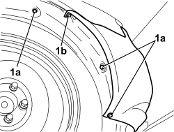
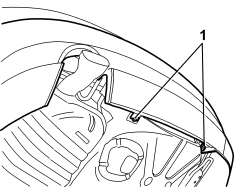
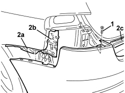
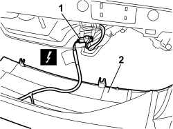
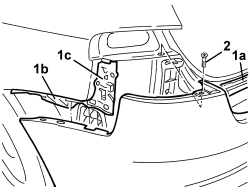

7210E66 R.R. REAR BUMPER
- Path
- Procedures > 72 PANELS AND FRAMES > 7210 REMOVING-REFITTING > 7210E EXTERNAL PARTS > 7210E66 R.R. REAR BUMPER
- Kind
- repair procedure (removal / refitting; the operation number is the code)
- Applies to
- all engines; all production periods
- Interactive page
- https://sloeber94.github.io/elrnDB/#/939011398
Applies to: all engines; all production periods
 Removing
Removing
 Refitting
Refitting- Position the vehicle on a lift.
For the left and right sides.
Op. 5540A56 EXTERIOR REAR LIGHT (ONE), LEFT OR RIGHT - R.R.
- Raise the vehicle.
1. Working on both sides of the vehicle, undo the bolts fixed to the wheel arches (1a) and the bolts fixed to the bodyshell (1b).

Applies to: all engines; all production periods
1. Undo the lower bolts fixing the bumper.

Applies to: all engines; all production periods
- Lower the vehicle.
1. Working on both sides of the vehicle, undo the upper bumper fixing bolts.
2. Move the bumper slightly, releasing it from the side retainers (2a) and (2b) and from the centre retainer (2c).

Applies to: all engines; all production periods
1. Disconnect the electrical connections.
Description | Component |
|---|---|
BUMPER/REAR COUPLING |
2. Keep the rear bumper.

Applies to: all engines; all production periods
Refitting
Removing- Check that the bumper is not damaged.
- Connect the electrical connections.
1. Position the bumper and fit it in place attaching the centre retainers (1a) and the side retainers (1b, 1c).
2. Working on both sides of the vehicle, tighten the upper fixing bolts.
Component | Fastening | dia | Value (daNm) | Validity |
|---|---|---|---|---|
REAR BUMPER | Bolt | M6 | 0.7 ÷ 1.1 |

Applies to: all engines; all production periods
- Raise the vehicle.
- Tighten the lower bolts fixing the bumper.
Component | Fastening | dia | Value (daNm) | Validity |
|---|---|---|---|---|
REAR BUMPER | Bolt | M6 | 0.7 ÷ 1.1 |

Applies to: all engines; all production periods
- Working on both sides of the vehicle, tighten the bolts fixed to the wheel arches and the bolts fixed to the bodyshell.
Op. 5540A56 EXTERIOR REAR LIGHT (ONE), LEFT OR RIGHT - R.R.
- Remove the vehicle from the lift.
Topics linked from this page (2)
Topics that link to this page (8)
- 5010C60 LH OR RH REAR AIR OUTLET VENT (ONE) - R.R
- 5505C41 PASSENGER COMPARTMENT WIRING - R.R
- 5505C82 WIRING BUILT INTO REAR BUMPER R R
- 5580H30 PARKING OBSTACLE DETECTION SYSTEM REAR SENSORS - R.R.
- 7055B24 REAR BUMPER DAMPER - R+R WITH BUMPER REMOVED
- 7055B75 REAR BUMPER CENTRE MOUNT - R R
- 7055B76 REAR BUMPER SIDE MOUNT ONE LEFT OR RIGHT R R
- 7210B82 R.R REAR CROSSMEMBER